2.1.1 人体神经系统
人的心理结构是人的操作系统的重要基础。心理活动依托于生理基础而存在，当以这种视角看待自己时，也许可以把自己看做是生活在生物“机器”中的心理存在体。
人的神经系统的控制中心位于大脑。尽管神经系统的众多部分实施不同的功能，但它们是以整合的方式共同运作的。人的神经系统约由1000亿个神经元组成，其数量与银河系中星星的数量接近，每个神经元可以接受或传输1000到10000个其他神经元的信息。神经元之间以复杂的方式彼此传递信息，从而使神经系统既是身体的计算机，又是其交流的网络。
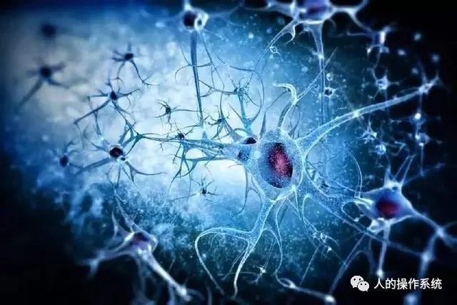
本篇介绍人的神经系统在物质层面的生理结构。内容主要摘自参考书，图片来自书中插图和网络，汇编整理，作为学习笔记。
1 神经系统概貌
人的神经系统是一个由神经元构成的异常复杂的机能系统，在人体内起主导调节作用。根据结构和机能的不同，可将人的神经系统分为两大部分：（1）中枢神经系统（central nervous system）；（2）周围神经系统（或称外周神经系统）（peripheral nervous system）。
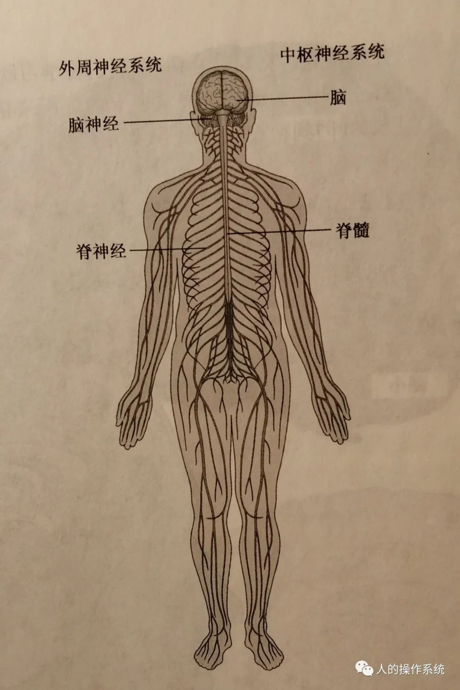
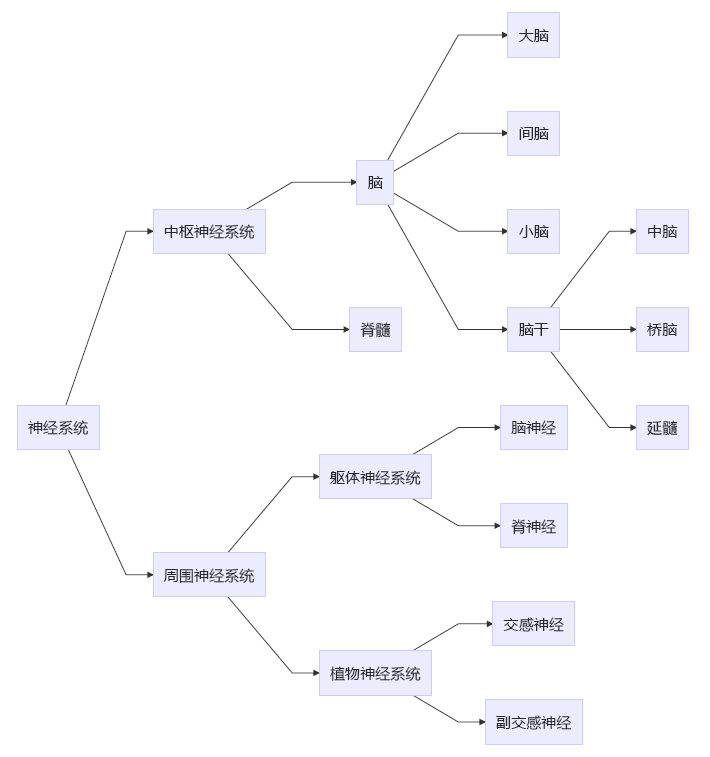
2 中枢神经系统
中枢神经系统包括脑和脊髓，是人体神经系统的最主体部分，所以被称为中枢神经系统。脑在颅腔内，脊髓在脊柱中。
2.1 脊髓
脊髓（spinal cord）是中枢神经系统的低级部位，位于脊椎管内，略称圆柱形，前后稍扁，上接延脑（延髓），下端终止于一根细长的终丝。
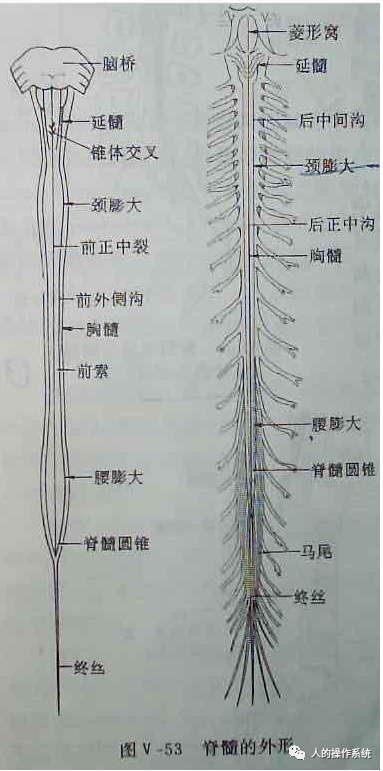
脊髓表面以前后两条纵沟分成对称的两半。从横切面看，脊髓中央是呈“H”形的灰质，它的主要成分是神经元的胞体和纵横交织的神经纤维。灰质的外面为白质，由纵行排列的神经束组成。
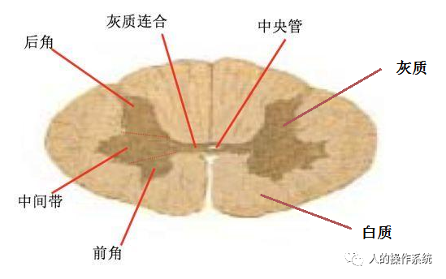
脊髓每侧灰质的前端扩大为前角，内含有大型多极神经元，称为前角运动细胞。它们的轴突组成脊髓前根，直接支配骨骼肌的运动。灰质的后端形成后角，含有小型多极神经元。后角细胞为感受细胞，它接受进入脊髓后根的纤维，把外界的信息传送给脑。
脊髓的主要作用有：①脊髓是脑和周围神经的桥梁。来自躯体和四肢的各种刺激，只有经过脊髓才能传导到脑，受到脑的更高级的分析与综合；而由脑发出的指令，也必须通过脊髓，才能支配效应器官的活动。②脊髓可以完成一些简单的反射活动，如膝跳反射、肘反射、跟腱反射等。在正常情况下，这些反射是可以不受脑的支配的。
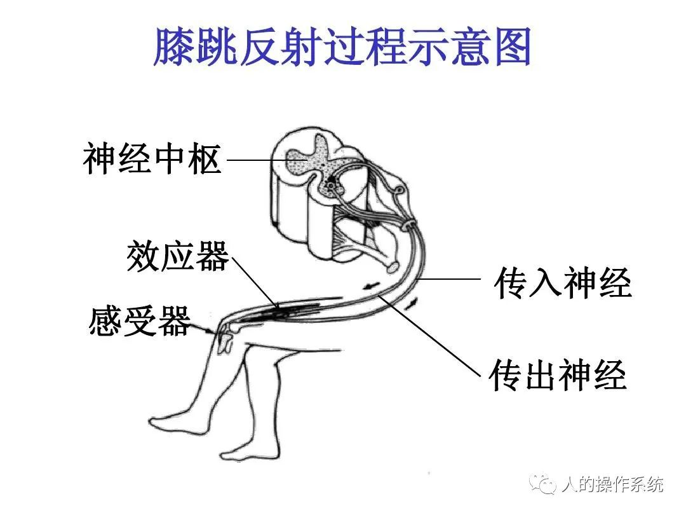
3.2 脑干
脑干（brainstem）位于大脑下方，在脊髓和间脑之间，是中枢神经系统的较小部分，呈不规则的柱状形。脑干自下而上由延髓、脑桥、中脑三部分组成。延髓部分下连脊髓。
延髓（medulla）在脊髓上方，背侧覆盖着小脑，是一个狭长的结构，全长四厘米所有。延脑与有机体的基本生命活动密切相关，它支配呼吸、排泄、吞咽、肠胃等活动，因此又被称为“生命中枢”。
脑桥（pons）在延脑的上方，位于延脑和中脑之间，是中枢神经与周围神经之间传递信息的必经之地，对人的睡眠具有调节和控制作用。
中脑（midbrain）位于丘脑底部，小脑、桥脑之间。它的形状较小，结构也较简单。从横切面看，中脑可分成三部分：①中央灰质，指环绕大脑导水管的灰质。腹侧有眼动神经核和滑车神经核，两侧有三叉神经中脑核，分别支配眼球、面部肌肉的活动。②中脑四叠体，在中央灰质背面。其中上丘是视觉反射中枢，下丘是听觉反射中枢。③大脑脚，其中有黑质和红核，与调节身体姿势和随意运动有关。如果黑质损伤，手脚的动作协调将会受到破坏，面部表情将显得呆板；如果红核损伤，病人将出现舞蹈症等。
在脑干各段的广大区域，有一种由白质与灰质交织混杂的结构，叫做网状结构或网状系统（reticular system），主要包括延髓的中央部位、桥脑的被盖和中脑部分。网状结构按功能，可分成上行系统和下行系统两部分：①上行网状结构，也叫上行激活系统。它控制着机体的觉醒或意识状态，与保持大脑皮层的兴奋性，维持注意状态有密切的关系。如果上行网状结构受到破坏，动物将陷人持续的昏迷状态，不能对刺激做出反应。②下行网状结构，也叫下行激活系统。它对肌肉紧张有易化和抑制两种作用，即加强或减弱肌肉的活动状态。
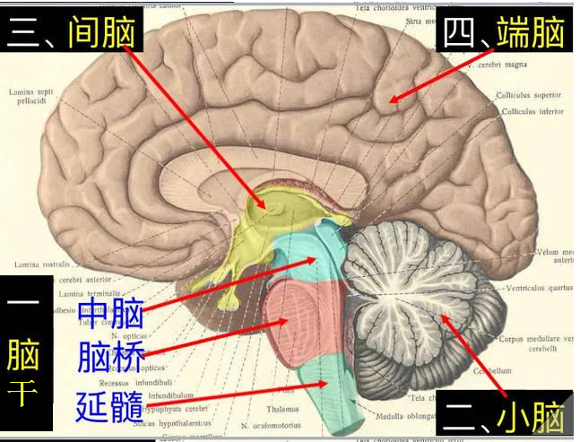
3.3 小脑
小脑（cerebellum）在脑干背面，分左右两半球。小脑表面的灰质叫小脑皮层，其表面积约为1000平方厘米。内面的白质叫髓质。小脑与延脑、桥脑、中脑均有复杂的纤维联系。
小脑的作用主要是协助大脑维持身体的平衡与协调动作。一些复杂的运动，如签名、走路、舞蹈等，一旦学会，似乎就编入小脑，并能自动进行。小脑损伤会出现痉挛、运动失调，丧失简单的运动能力。小脑在某些高级认知功能（如感觉分辨）中有重要作用。小脑功能缺陷还可能导致口吃、阅读困难等。
3.4 间脑
在脑干上方、大脑两半球的下部，有两个鸡蛋形的神经核团，叫丘脑（thalamus）。它的正下方有一个更小的组织，叫下丘。丘脑和下丘共同组成间脑。
丘脑是个中继站。丘脑后部有内、外侧膝状体，分别接受听神经与视神经传入的信息。除嗅觉外，所有来自外界感官的输入信息，都通过这里再导向大脑皮层，从而产生视、听、触、味等感觉。丘脑是网状结构的一部分，因而对控制睡眠和觉醒也有重要意义。
下丘脑（hypothalamus）是调节交感神经和副交感神经的主要皮下中枢，对维持体内平衡，控制内分泌腺的活动有重要意义。例如，下丘脑前部对体温的升高很敏感，它可以发动散热机制，使汗腺分泌、血管舒张；相反，下丘脑后部对体温降低很敏感，可以发动保温、生热机制，使血管收缩、汗腺分泌停止。下丘脑在情绪产生中也有重要作用。用微弱电流刺激下丘脑的某些部位，可产生快感；而刺激相邻的另一区域，将产生痛苦和不愉快的情绪。
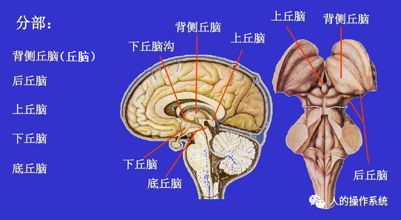
3.5 边缘系统
在大脑内侧面最深处的边缘，有一些结构，它们组成一个统一的功能系统，叫边缘系统（limbic system）。边缘系统包括扣带回、海马回、海马沟、附近的大脑皮层（如额叶眶部、岛叶、颞根、海马及齿状回），以及丘脑、丘脑下部、中脑内侧被盖等。
边缘系统参与学习和记忆活动。海马是边缘系统中，对记忆功能有重要作用的区域。海马损毁的病人，空间信息记忆和时间编码功能将受到破坏。他们不能回忆刚看过的东西的位置，也不能回忆刚学过的词的顺序。
边缘系统与情绪有密切的关系。表情面孔，彩色情绪图片或情绪词等都能显著激活边缘系统中的杏仁核（amygdala）。边缘系统与注意有密切的关系。在有意注意，在执行有冲突的任务或任务难度增加时，扣带回都能显著地被激活。
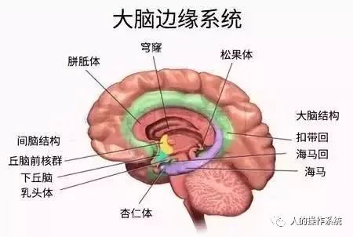
3.6 大脑（端脑）
大脑，又称端脑，位于整个脑的最上端，略呈半球状，顶与四周部分外贴颅骨，下方笼盖在间脑、中脑和小脑的上面。大脑体积占中枢神经系统总体积的一半以上，重量约为脑的总重量的60％。
大脑包括左、右两个大脑半球，这两个半球通过胼胝体（corpus callosum）相连，从而两个半球之间能够相互交流。大脑皮层的许多功能为两个半球所共有，也有所差异。大脑对身体是交叉控制的，也就是左半脑控制右边的身体，右半脑控制左边的身体。
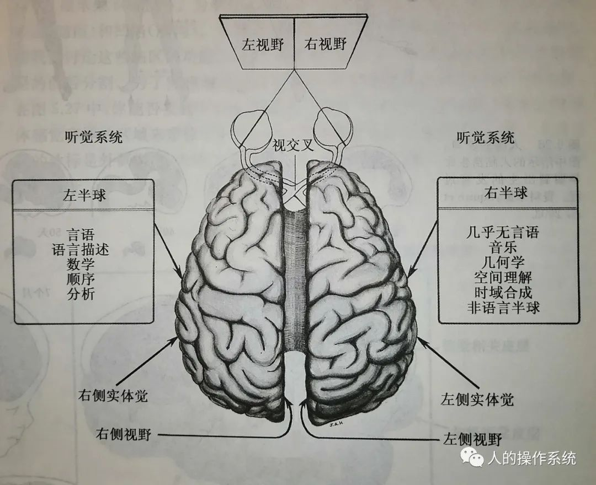
大脑半球的表面布满深浅不同的沟或裂。沟裂间隆起的部分称为脑回。有三条大的沟裂，即中央沟、外侧裂和顶枕裂，这些沟裂将半球分为额叶、顶叶、枕叶和颞叶几个区域，在大脑外侧沟深部还有被顶、额、颞叶覆盖的脑岛（岛叶）。在每一个脑叶内，一些较细小的沟裂又将大脑表面分成许多回或小叶。
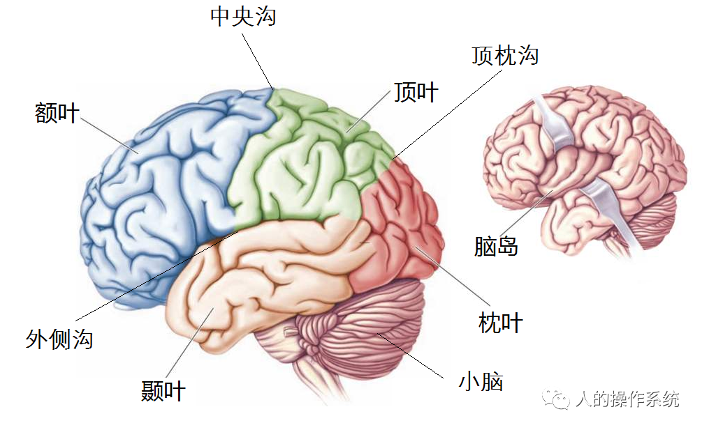
额叶位于头颅的前额之后，并向后延伸到头顶中部。
额叶是运动规划和运动信号输出的主要中枢。运动区与躯体的感觉区紧密相连，有着相似的人类大脑皮层拓扑图。中央沟靠近额叶一侧是运动区，中央沟靠近顶叶一侧是躯体感觉区。身体各部位投射面积的大小取决于它们感觉和运动的精细程度。例如，手的代表区面积很大，而躯干的代表区则很小。
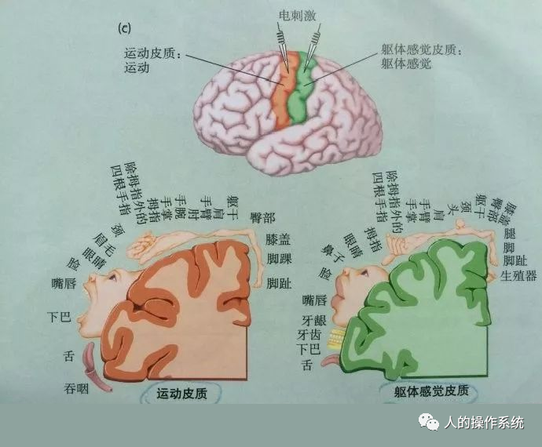
前额叶位于额叶前区的内侧、外侧和球表面，占据了额叶前端的大部分，几乎占了整个大脑皮层的三分之一。前额叶是额叶的非运动区，可能是最特殊的认知脑区。前额叶的功能包括：
- 产生行为活动
- 制定计划
- 存储重要的信息以待使用（工作记忆的一个方面）
- 切换思维模式来思考另一件事
- 监控行为的有效性
- 发现并解决行为中相冲突的方案
- 抑制那些无效果或不利于自己的方案和行为
这个列表显示出前额叶在人类认知活动中是多么的重要。
顶叶正好位于额叶后方，头颅顶部。顶叶的前部是躯体感觉皮层，如上文所述，与额叶的运动皮层紧密相邻。顶叶还有一个重要的功能就是身体空间的多重地图。“身体空间”是什么意思？试想一下，你坐在桌边的椅子上，向下看你的双手。你的眼睛以你的身体为参照，把你双手所在位置的感觉信息传入到你的大脑，同时还有其他的传入信息也能告诉你双手的位置（这就是当你双眼闭着，也能知道你双手所在位置的原因）。你会从自己的角度或自我中心角度来想象手的位置。现在想象一个朋友坐在你的对面，从他（她）的角度出发想象你双手的位置。你是怎么做到的呢？处理这种情况的脑区就在顶叶。
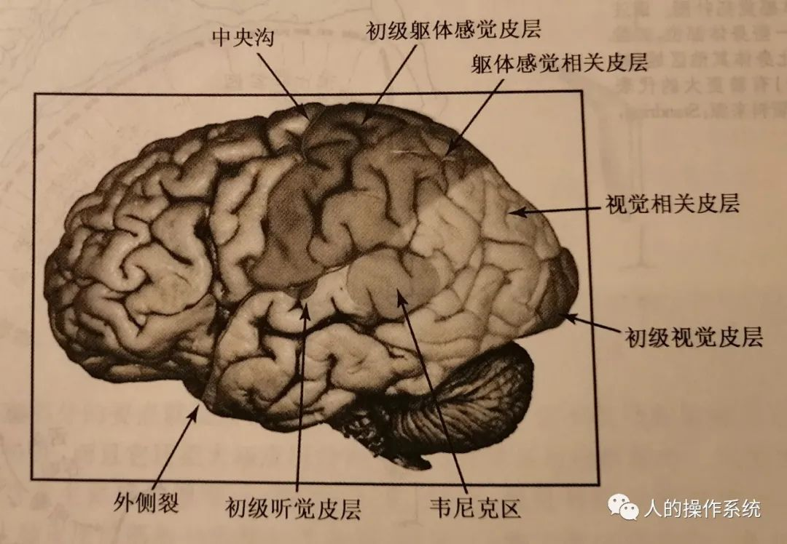
颞叶从头颅颞区向后延伸，位于额叶和顶叶下方，在大脑底部的中间区域。颞叶是处理声音的区域，同时也是听觉语言和言语理解系统所在的区域。听皮层位于颞叶上部，外侧裂内部。听皮层后面就是韦尼克区，它的主要功能是言语理解。然而，颞叶不单是处理声音和语言的区域。人们认为颞叶的中部包含语意知识的概念型代表区。颞叶更下部和更后部区域是对视觉物体更细微调节的代表区，以及梭形回面孔区。
枕叶位于头后的底部，是视皮层所在之处。大多数的视皮层藏在距状裂内。视觉系统占据了枕叶的大部分区域，还向前延伸到顶叶和颞叶。
脑岛是位于大脑皮层外侧裂之下的结构。脑岛可能参与了内脏感觉，如恶心作呕。但脑岛可能具有多种功能，有很多证据表明，一个人对其内在器官的感觉（即内感受觉），也许是神秘脑岛的主要功能之一。有研究者认为，脑岛为人类情感意识提供了基础。
大脑皮层与丘脑、网状结构的大规模联结
大脑皮层细胞发出的神经纤维伸向各个方向：水平地流向相邻的细胞，聚成一大束去到比较远的皮层区域，向下汇聚到双侧脑半球中的丘脑。
可以将丘脑想象成中转站：几乎所有传入信息传到大脑皮层前都要先到丘脑；几乎所有传出信息在去到肌肉和腺体前也都要先在丘脑处中途停留。此外，上亿个轴突交叉从一侧脑半球流向对侧脑半球，形成名为联合纤维组织的白色轴突桥，其中最大的交叉纤维桥就是胼胝体。最后大脑皮层感觉和运动通路组成人脑中传入和传出的“高速公路”。所有的这些通路都是从脑底部流入的。
最后要再说一下网状结构。网状结构接受所有感觉和运动系统，以及脑中其他主要结构的输入。通过它与丘脑间的联接，它可以把信息传导大脑皮层的所有区域，也可以接受来自大脑皮层所有区域的信息。有一种观点认为，一个大脑皮层的感觉投射区提供传入信息到网状结构，若这个传入信息在与其他传入信息竞争中胜出，那么胜出的信息将被散布到各个脑区，成为全脑信息。
尽管出于方便，我们将大脑分成诸多分离的部分进行认识，但是应该知道，这些不同的部分是高度地联系在一起的，是共同运作的一个整体。
3 周围神经系统
周围神经系统联络中枢神经系统和其它各系统器官之间。通常由三部分组成：①脊神经；②脑神经；③植物性神经。
3.1 脊神经
脊神经发自脊髓，穿椎间孔外出，共31对。依脊柱走向，脊神经分为颈神经8对，胸神经12对，腰神经5对，骶神经5对和尾神经1对。
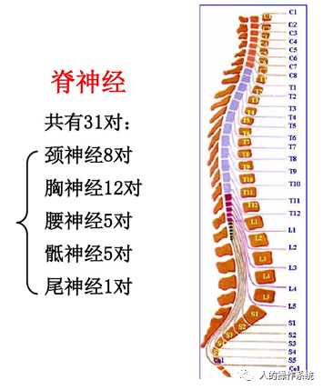
脊神经由脊髓前根和后根的神经纤维混合组成。脊髓前根的纤维属运动性，后根的纤维属感觉性。因此，混合后的脊神经是运动兼感觉的。
脊神经具有四种不同的机能成分：
- 一般躯体感觉纤维：分布于皮肤、骨骼肌、腱和关节。
- 一般内脏感觉纤维：分布于内脏、心血管和管和腺体。
- 一般躯体运动纤维：支配骨骼肌的运动。
- 一般内脏运动纤维：支配平滑肌、心肌和腺体。
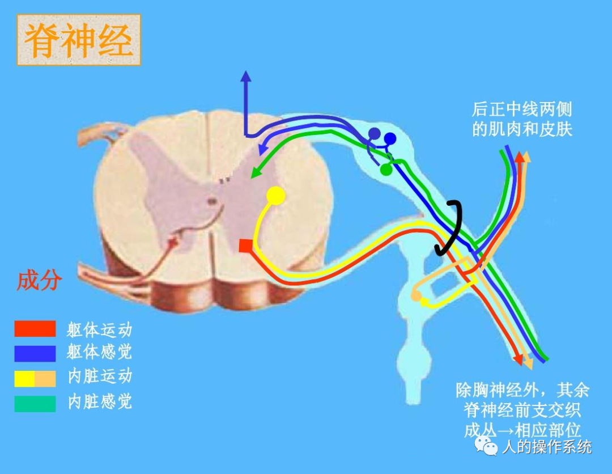
3.2 脑神经
脑神经由脑部发出，共12对。按顺序为：Ⅰ嗅神经；Ⅱ视神经；Ⅲ眼动神经；Ⅳ滑车神经；Ⅴ三叉神经；Ⅵ外展神经；Ⅶ面神经；Ⅷ听神经；Ⅸ舌咽神经；Ⅹ迷走神经；Ⅺ副神经；Ⅻ舌下神经。
其中第Ⅰ、Ⅱ、Ⅷ对感觉神经，分别传递嗅觉、视觉、听觉和平衡觉的感觉信息。第Ⅲ、Ⅳ、Ⅵ、Ⅺ、Ⅻ对为运动神经，分别支配眼球活动、颈部和面部的肌肉活动以及舌的运动。第Ⅴ、Ⅶ、Ⅸ、Ⅹ对为混合神经，其中第Ⅴ对的三叉神经负责面部感觉和咀嚼肌的运动；第Ⅶ对的面神经支配面部表情、舌下腺、泪腺及鼻黏膜腺的分泌，并接受味觉的部分信息；第Ⅸ对的舌咽神经负责味觉和唾腺分泌等；第Ⅹ对的迷走神经支配颈部、躯体脏器的活动，包括咽喉肌肉、内脏平滑肌及心肌的运动，同时，还负责—般内脏感觉的输入。
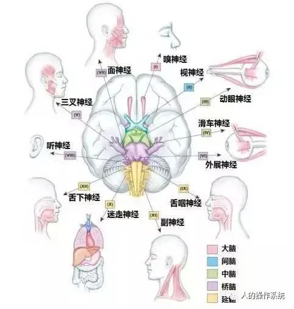
3.3 植物性神经
植物性神经系统分成交感神经系统和副交感神经系统两个部分。
交感神经系统从脊髓的全部胸髓和上三节腰髓的灰质侧角内发出。它借助短短的交通支（节前纤维）和脊髓两侧的交感干联系，然后由交感干神经节发出节后纤维，以支配胸腹部的脏器和血管的活动。副交感神经系统发自中脑、桥脑、延脑和脊髓的骶部。它的节前纤维在副交感神经节中交换神经元，然后由此发出节后纤维，至平滑肌、心肌和腺体。副交感神经节一般位于脏器附近或脏器壁内。
交感神经和副交感神经在机能上具有拮抗性质。交感神经是机体应付紧急情况的机构。当人们挣扎、搏斗、恐惧或愤怒时，交感神经马上发生作用，它加速心脏的跳动；下令肝脏释放更多的血糖，使肌肉得以利用，暂时减缓或停止消化器官的活动，从而动员全身力量以应付危急。而副交感神经的作用相反，它起着平衡作用，抑制体内各器官的过度兴奋，使它们获得必要的休息。
植物性神经过去也叫“自主神经”，意思是它们不受中枢神经系统的支配，因为人们不能随意地控制内脏的活动。但是，生物反馈的研究表明，人们通过特殊的训练，在一定程度上可以随意地控制内脏的活动，如调节体温的升降、血压的高低、心跳的快慢等。因此，把植物性神经叫做“自主神经”就不是很确切了。
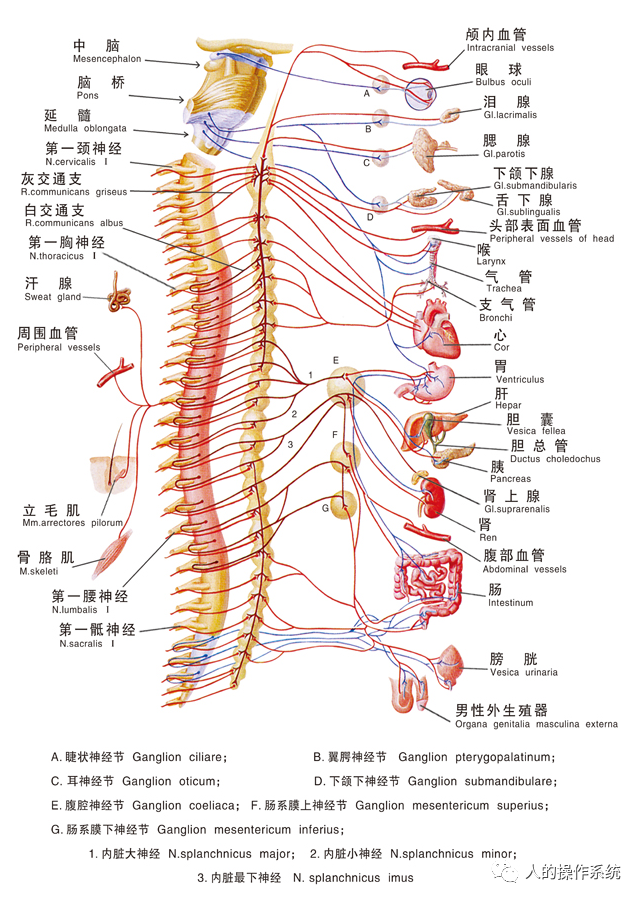
4 参考文献
[1] 彭聃龄主编. 普通心理学[M]. 第四版. 北京: 北京师范大学出版社,2012.5.
[2] (美)Bernard J. Baars,Nicole M. Gage主编. 认知、大脑和意识[M]. 王兆新,库逸轩,李春霞等译．上海: 上海人民出版社,2015.
[3] (美)Benjamin B. Lahey著. 心理学导论[M]. 吴庆麟等译. 第9版. 上海: 上海人民出版社,2010．